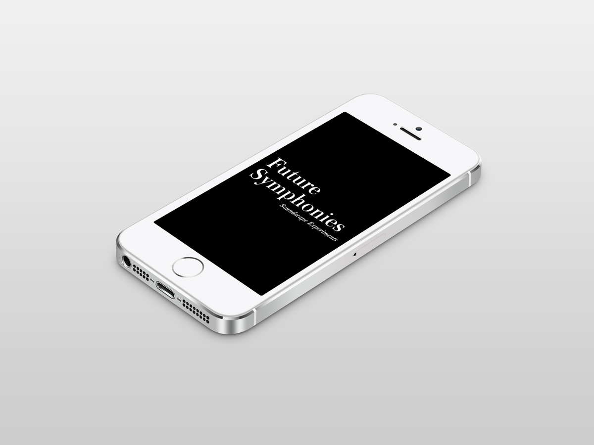
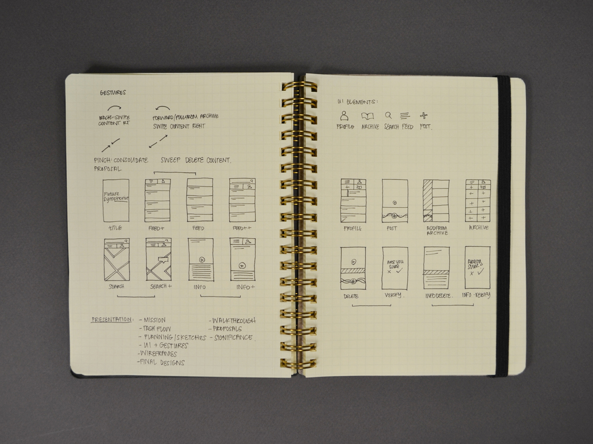
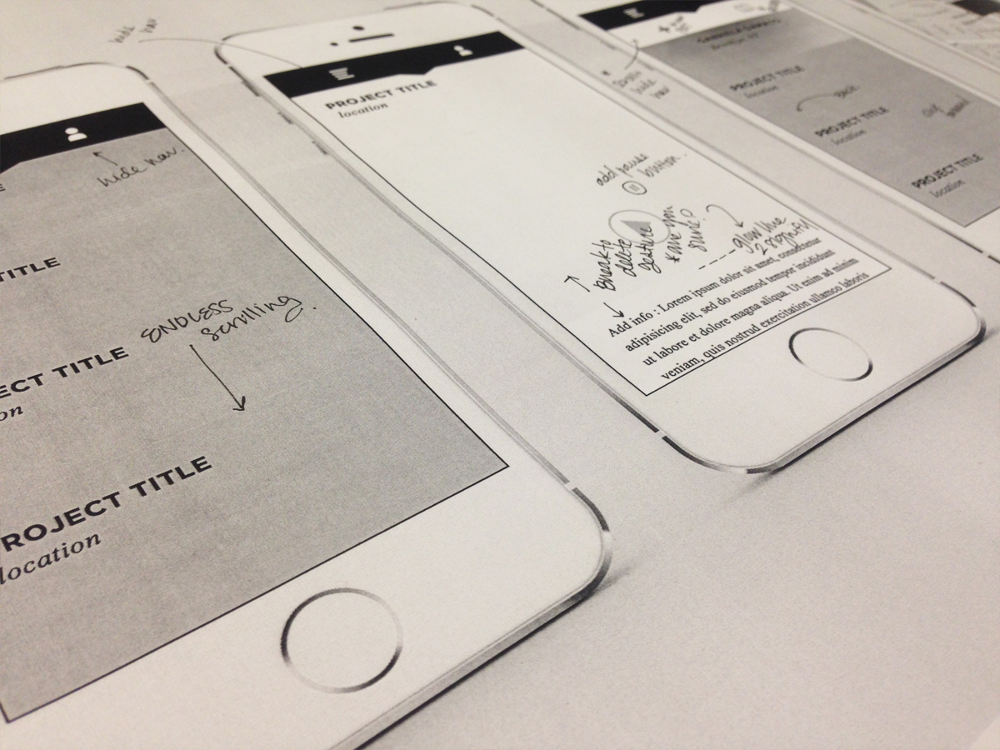
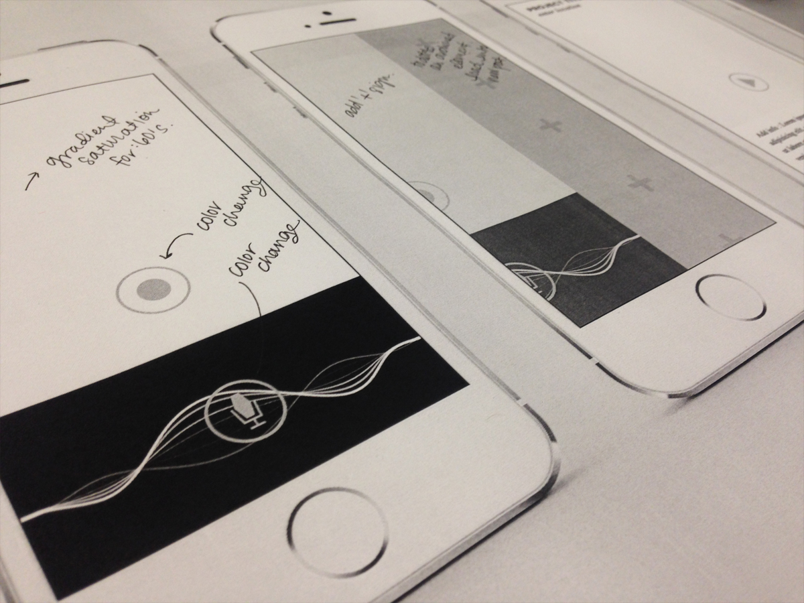
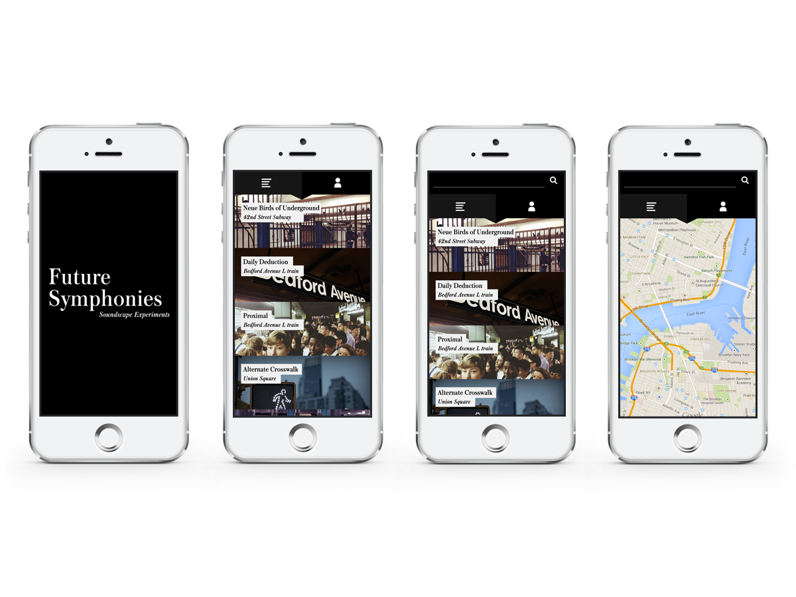

Future Symphonies
Interactive Design
2014
About:
Soundwave Preparations = a mobile application that allows one to re-imagine their sonic environment.
Interactive Design
2014
About:
Soundwave Preparations = a mobile application that allows one to re-imagine their sonic environment.
Through the combination of audio and video content, the urban space becomes a playground for alternative thinking and documentation.
By publishing and engaging with sonic commentary, each and every proposition becomes an advocate for change and curiosity.
By publishing and engaging with sonic commentary, each and every proposition becomes an advocate for change and curiosity.
Because well considered thinking trumps social clout, network followers, cross platform sharing, and "likes" are absent from the platform.
All content propositions are viewable at vimeo.com/gabrieladamato
All content propositions are viewable at vimeo.com/gabrieladamato




